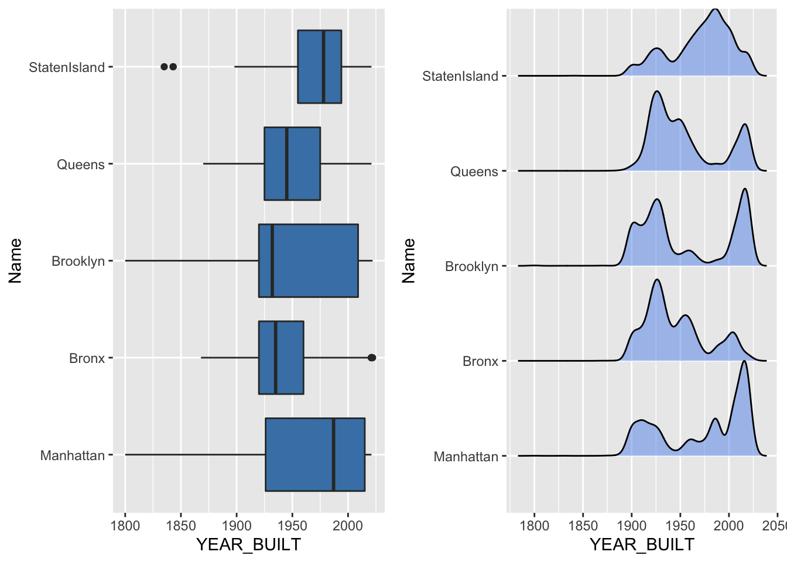
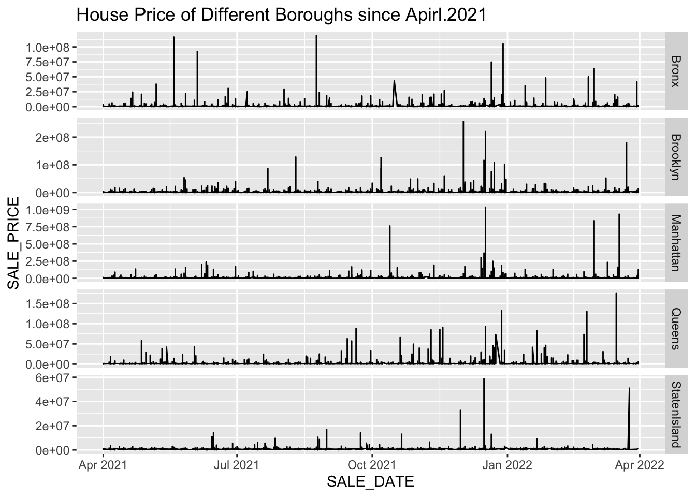
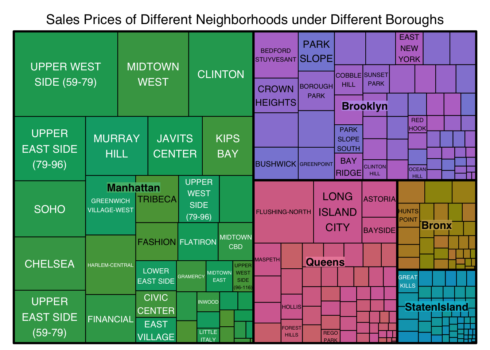
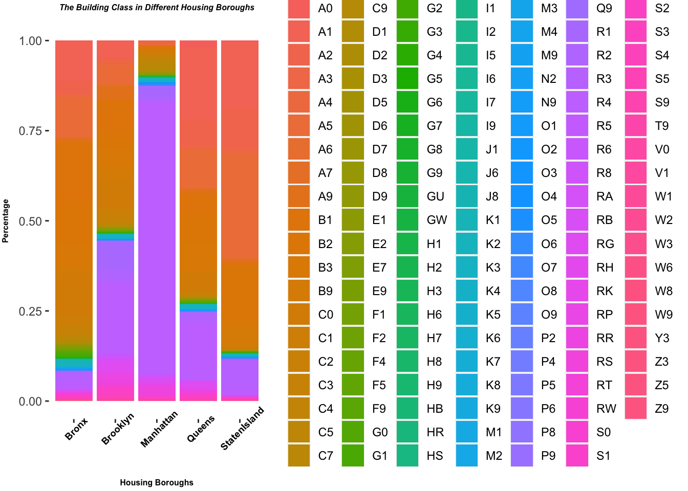

Chapter 5 Results
5.1 Analysis from the Perspective of the Five Boroughs
First, we made an initial breakdown of the sales prices of homes sold on a rolling basis over the past year, dividing home transactions into five sections based on boroughs: ‘Manhattan’, ‘Bronx’, ‘Brooklyn’, ‘Queens’, and ‘StatenIsland’.

From the pie chart we can see that in the past year, Brooklyn had the highest rolling home sales (15,037), followed by Queens (14,436). The bronx, on the other hand, had the lowest number of home sales at 3573.Manhattan and Staten Island are in the middle. Our initial speculation is because most people’s jobs may be in or near Manhattan, but the prices in Manhattan and the cost of living are so high that they choose to settle closer to it. And compared to bronx and Staten Island, Brooklyn and Queens are better places to live, such as buying goods or transportation will be more convenient.
5.1.1 Visualize Distributions of Building Year Built with Different Borough


The left is the Boxplots of Year of Building Establishment by Borough Name. The right graph is the Ridgeline Plots of Year of Building Establishment by Borough Name.
The boxplots allow us to see that there are some year bulit outliers for each borough, with the most happening in the “StatenIsland” borough. We can also see from the boxplots that the median year built is similar for Bronx and Brooklyn. The ridgeline plots allow us to easily compare distributions of the year built of collisions. The distribution of year built for Queens, Brooklyn, and Bronx are all very similar and basically trimodal about 1925, with some collisions happening at later years. The distribution of year built at StatenIsland is little different – it is almost unimodal with modes at 1985.
5.1.2 The Analysis of Rolling Price Change in Five Boroughs.
We want to examine the changes in house prices over time in different regions during the year: 
Meanwhile, we can see that between April 2021 and the end of 2021, the rolling house price prices in all four regions except the bronx are on a relatively low trend. And by January 2022, there is a significant upward trend in house prices. In our opinion, this is related to the economic downturn and lower home prices due to covid-19 last year. And by January of this year, the pandemic’s impact on the economy is significantly lower, and the real estate market is showing signs of recovery.
Based on our previous general knowledge of these five areas, we wanted to visualize the relationship between neighborhoods and house prices in these five areas, so we drew a tree diagram by comparing the sales prices of different neighborhoods under different boroughs. 
We can see that in Manhattan’s neighborhoods, the upper west side, midtown west and clinton areas all have relatively high housing prices. For Brooklyn, the house in bedford stuyvesant and crown heights areas are more sought after. And people in Queens prefer to settle in Flushing and Long Island.And people in Queens prefer to settle in Flushing and Long Island. Our analysis is because most Chinese people are active in Flushing, while Long Island is close to Manhattan and not as expensive as Manhattan. That’s why houses in these two areas are more popular.

The above graph analyzes the building classification in different boroughs, presented as a percentage. It can be found that Queens and StatenIsland, with a higher proportion of building type A, are one-family homes. Manhattan and Brooklyn have a higher proportion of building type R, representing condominiums, which fits with our conclusion that we get from the first interactive plot.
##
## 2021-04 2021-05 2021-06 2021-07 2021-08 2021-09 2021-10 2021-11 2021-12 2022-01 2022-02 2022-03
## 3842 3781 4584 4268 4817 3939 4180 3839 4936 3645 3413 29125.2 Analysis House Price from the Perspective of Tax Class
Next, we further investigate rolling house prices from the perspective of tax levels. In our dataset, taxes are divided into four levels.
Class I:Includes most residential properties of up to three units (e.g:
Two- and three-family dwellings and one- or two-family apartments attached to a small store or office), vacant land zoned for residential use, and most apartments of no more than three stories.
Class 2: Includes all other properties that are primarily residential, such as
cooperatives and condominiums.
Class 3:Includes property companies that own gas, telephone or electric equipment.
Class 4:Includes all other properties not included in Class 1, Class 2 and Class 3, such as offices, factories, warehouses, garages, etc.

The density histogram describes the relationship between different tax classes and housing prices. They all belong to right-skewed, and most of the housing prices in different class are concentrated around 700,000 to 1,000,000. Tax class 4 increases the number when the housing prices around 5 million. Tax class 1 has a higher concentration of housing prices. It is worth noting that although the graph read from the whole data set, there is no tax class 3, which may be caused by filtering out in the process of removing missing values as well as cleaning the data.
We also compared the rolling transaction prices between the different tpyes of houses in tax category 1, 2 and 4:
From this chart, we can see that the fourth type of tax area has the most housing types. Office bulidings and warehouses for it are the most expensive types of houses. On the contrary, condo and outdour facilities are considered to have lower transaction prices in the fourth tax category. Among these threetypes, the average price of the first tax type is less compared to the other two, and the house type is also the least. We consider the reason for this phenomenon is that in a rapidly growing economy, most people choose to live in condominiums rather than up to three units below the third floor, so the first tax type has been gradually eliminated from the rolling housing market.
In addition to home prices, we also wanted to understand the relationship between the total number of units at the listed property and the type of housing and taxes. Therefore, we drew a treemap:
Unlike the relationship between taxes and house prices mentioned earlier, properties in the second tax category have more number of units, and special condo billing lots are the most prominent in the second category. Moreover, the fourth tax type has the least number of units, which is the opposite of its relatively high price.
5.3 Correlation
The above graph shows the correlation plot for different variables. First, Manhattan has a positive correlation with house sale price of 0.14 compared to other boroughs, and total units also has a positive correlation with house sale price of 0.09. Manhattan and StatenIsland have a positive correlation with year built, which means that these two boroughs’ building are built in the later years and the houses have a younger age.